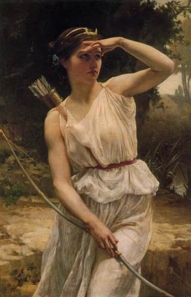

<head>
<meta charset="UTF-8" />
<meta name="keywords" content="drawing, painting" />
<meta name="description" content="drawings by Sunjy" />
<title>Sunjy</title>
<link rel="shortcut icon" type="image/x-icon" href="../../mImages/mCommon/favicon.ico" media="screen" />
<link rel="stylesheet" type="text/css" href="../../mCsses/mCommon/mCssA.css" />
<link rel="stylesheet" type="text/css" href="../../mCsses/mCommon/mCssB.css" />
<link rel="stylesheet" type="text/css" href="../../mCsses/mCommon/mCssC.css" />
<link rel="stylesheet" type="text/css" href="../../mCsses/mCommon/mCssD.css" />
<link rel="stylesheet" type="text/css" href="../../mCsses/mContent/mCssA.css" />
<link rel="stylesheet" type="text/css" href="../../mCsses/mContent/mCssB.css" />
<link rel="stylesheet" type="text/css" href="../../mCsses/mContent/mCssC.css" />
<link rel="stylesheet" type="text/css" href="../../mCsses/mContent/mCssD.css" />
</head>
<script type="text/javascript" src="../../mScripts/mContent/mContentAA.js" /></script>
<script type="text/javascript" src="../../mScripts/mContent/mContentAB.js" /></script>
<script type="text/javascript" src="../../mScripts/mContent/mContentAC.js" /></script>
<script type="text/javascript" src="../../mScripts/mContent/mContentAD.js" /></script>
<script type="text/javascript"></script> 
<script type="text/javascript">
document.write('<div class="mImgAbsolute"></div>');
/*
document.write('<p class="mFontSizeBColor" />From a white paper...</p>');
document.write('<table class="center"><tr><td>');
document.write('');
document.write('</td></tr></table>');
*/
</script>


<script type="text/javascript">
document.write('<p class="mFontSizeBColor" />Diane the Huntress</p>');
document.write('<p class="mFontSizeSColor" />“Diane the Huntress” by Guillaume Seignac is a more modern depiction of the goddess who is dressed in the classical “peplos” of ancient Greece. A peplos is a body-length garment that became the typical attire for women in ancient Greece by 500 BC.<br><br>The peplos was a long, tubular cloth with the top edge folded down about halfway so that what was the top of the tube was now draped below the waist, and the bottom of the tube was at the ankle. The garment was then gathered about the waist and the folded top edge pinned over the shoulders. The folded-down top of the tube provided the appearance of the second piece of clothing.<br><br>The Classical garment is represented in Greek vase painting, in the metopes of temples and on classical sculptures.<br><br>Guillaum Seignac (1870–1924) was a French academic painter. Much of Seignac’s work displayed classical themes and style, his use of diaphanous drapery covering a woman’s body is reminiscent of classical style, in particular the sculptor Phidias.<br></p>');
document.write('<table class="center" /><tr><td>');
document.write('<br>The peplos was a long, tubular cloth with the top edge folded down about halfway so that what was the top of the tube was now draped below the waist, and the bottom of the tube was at the ankle. The garment was then gathered about the waist and the folded top edge pinned over the shoulders. The folded-down top of the tube provided the appearance of the second piece of clothing.<br><br>The Classical garment is represented in Greek vase painting, in the metopes of temples and on classical sculptures.<br><br>Guillaum Seignac (1870–1924) was a French academic painter. Much of Seignac’s work displayed classical themes and style, his use of diaphanous drapery covering a woman’s body is reminiscent of classical style, in particular the sculptor Phidias.<br>" />');
document.write('</td></tr></table>');
</script>


